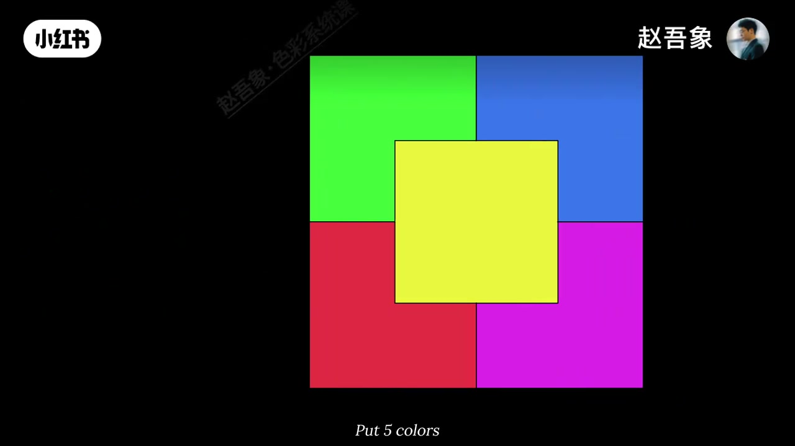
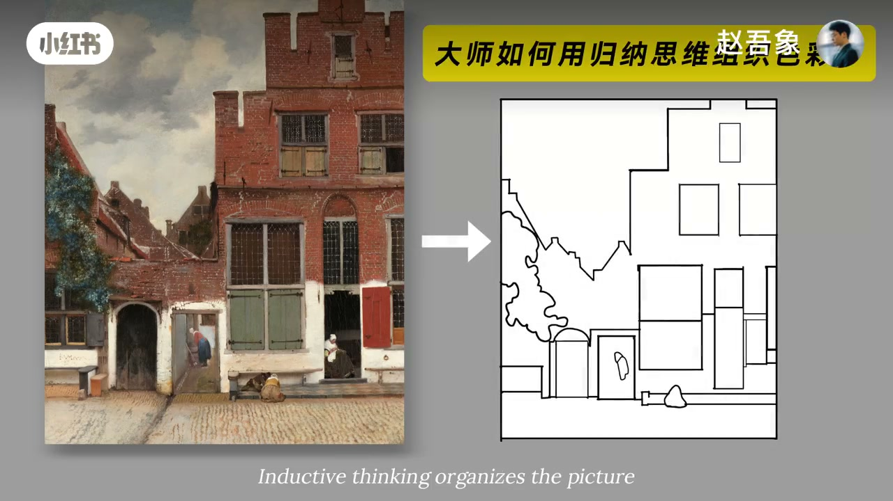
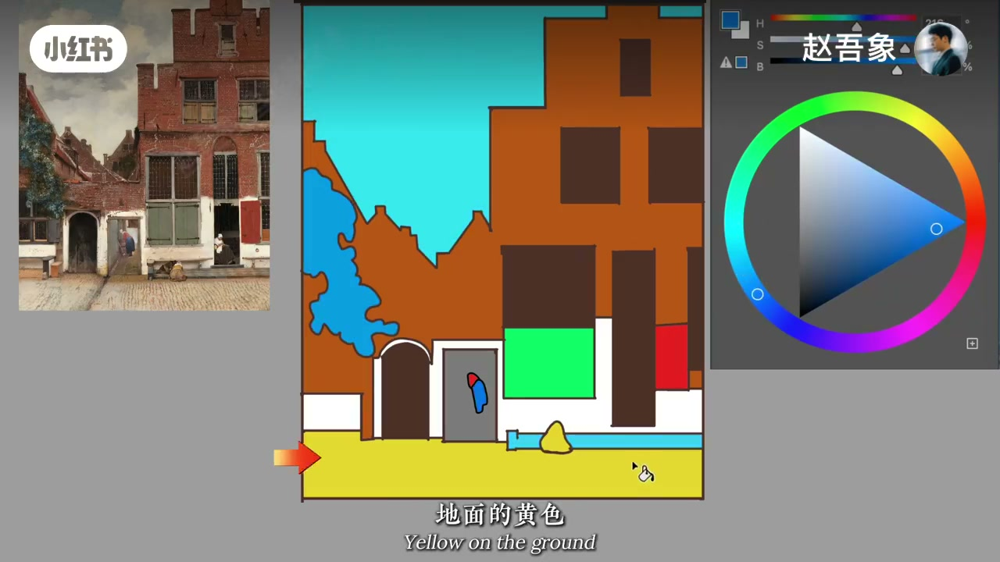
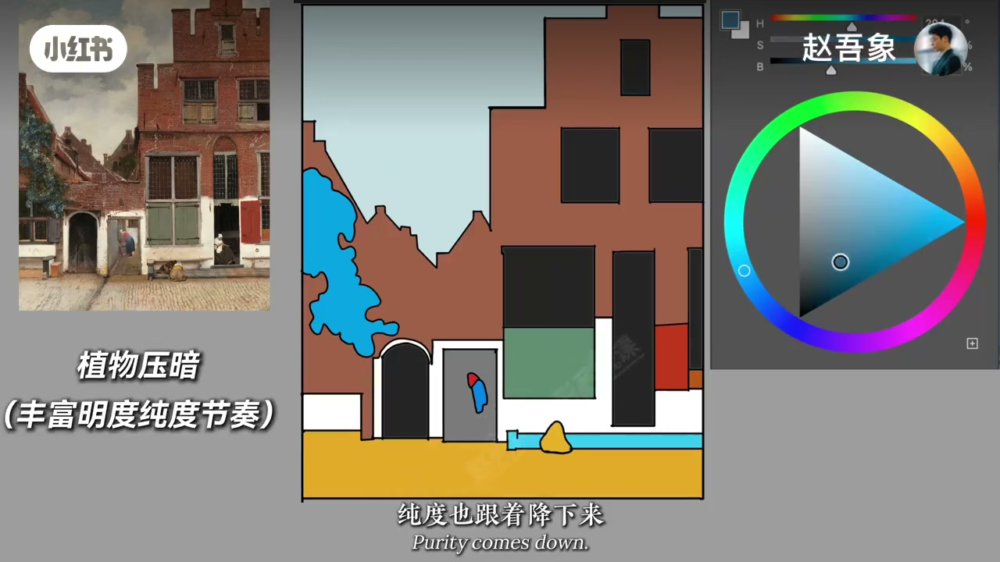
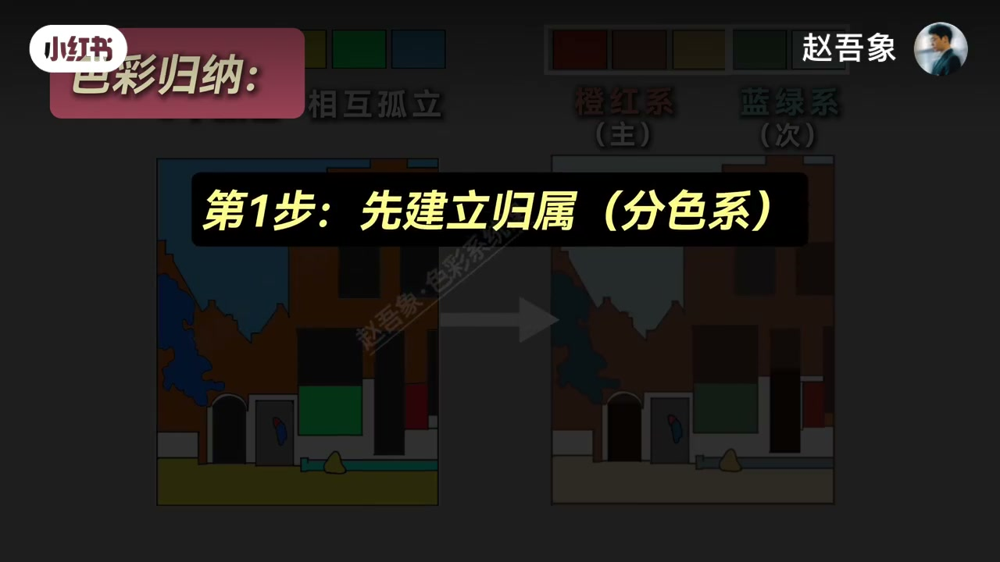

内容要点
知识结构
[00:00→00:36]
定义
五色出现后被组织起来，就是色彩归纳。
[00:36→01:12]
第一步归属
定橙墙与绿门主方向；蓝并入绿，黄往橙红靠。
[01:12→02:16]
第二步主次
红门最高纯；天空降纯后退；植物地面压暗发灰。
总结
归纳=先让颜色有归属，再拉开纯度明度主次，避免五色互相孤立。
图文实录
什么是色彩归纳
00:00 – 00:36
如果用五种颜色「水灵灵出现」却能成画，靠的就是归纳：不是平均摆色，而是组织关系。
这就是色彩归纳

[00:14]开场：五色被组织，这就是色彩归纳
Opening: organizing five colors—that is color induction
反推《小街》：先归属
00:36 – 01:12
假设小街由橙红黄绿蓝组成；先定墙面橙色与门的绿色两大方向；蓝天往绿里归成蓝绿；植物靠绿；地面黄往橙红泛红。
先确定两个主要的方向，墙面的橙色和门的绿色

[00:41]以《小街》反推：先建立颜色归属
Reverse-engineer Vermeer’s Little Street: first assign color belonging

[01:08]蓝并入绿、黄往橙红：完成归属
Fold blue into green and yellow toward orange-red: belonging done
再拉开主次
01:12 – 02:16
调整纯度：右侧红门最高纯做强调；天空大幅降纯后退；左侧植物明度压暗纯度下降；台阶地面发灰。对比原五色孤立状态。
让右侧的红门保持纯度最高，成为画面里的强调色

[01:35]主次：红门最高纯，天空降纯后退
Hierarchy: purest red door; sky desaturated and pushed back

[02:02]对比：归纳后颜色不再互相孤立
Compare: after induction, colors no longer sit isolated